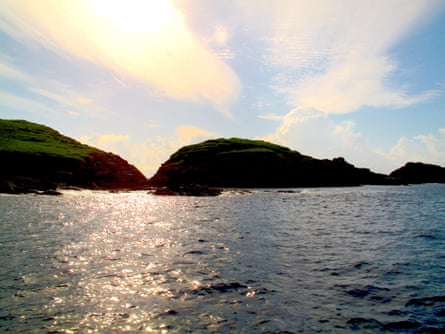
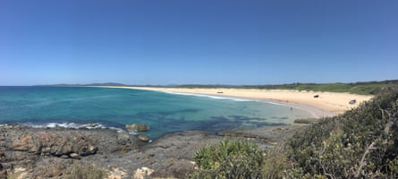

A 19-year-old surfer has been found safe on a remote island off the northern NSW coast after his dad posted an urgent plea requesting “boats, beach walkers, drones and 4WDs” to help find the missing teenager.
- Sign up for Guardian Australia’s breaking news email
Darcy Deefholts’ family were “fearing for the worst”, his father, Terry, said in an urgent post to Facebook calling for rescue help on Wednesday night.
The 19-year-old surfer had left his home in Wooli on a bike about 2.30pm yesterday, heading towards Wooli beach, NSW police said. When he didn’t return home, his family contacted police.
“Following a land and water search around Wooli beach including local police, PolAir, Marine Area Command and Marine Rescue, the man was located safe today on a small island off Wooli,” NSW police said.
Police later confirmed the teenager was found in the North Solitary Island Nature Reserve, around 14km off the coast.
In Terry’s post last night, the teenager’s father called on “anyone with a seaworthy vessel to please meet me at the main Wooli boat ramp and take me to sea to help with the search”.
“HELP - I NEED BOATS, BEACH WALKERS, DRONES AND 4WDs and PLANES AT FIRST LIGHT,” he wrote.
“As far as we can tell, Darcy took a cream Malibu surfboard with him to One Tree at Wooli and went for a surf in very small swell some time around 4pm. We think he was wearing a dark rashy.
“Of course we are fearing the worst … We are overwhelmed by the community efforts in the search so far. There is only one thing we want now – our beloved boy to be found safe.
In a comment on the post, Terry said it was “encouraging to know the water temp is 20 degrees and survivable”.
North Solitary Island on the NSW north coast.Photograph: James Woodford/The Guardian
In comments to the Daily Telegraph following Darcy’s rescue, Terry said he was still processing everything and had not slept.
“I haven’t had the chance to talk to him yet, I’m just so over the moon,” he told the paper, adding that it was “one in a million miracle”.
Wooli beach in northern New South Wales.Photograph: Janine Israel/The Guardian